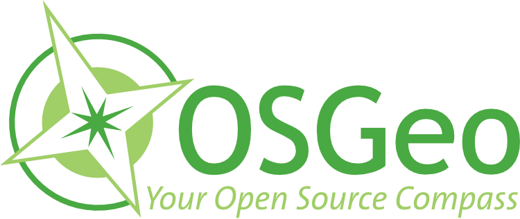
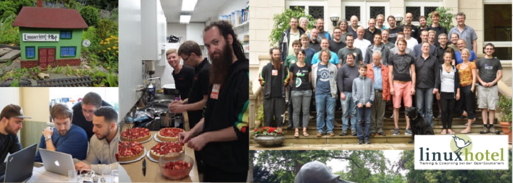
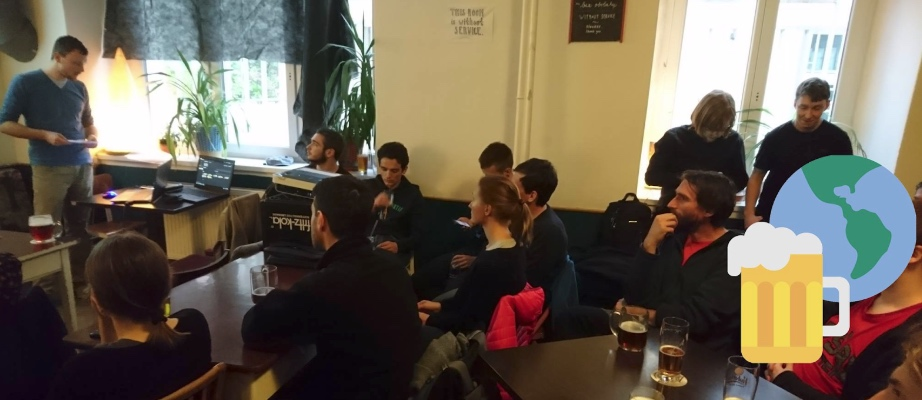
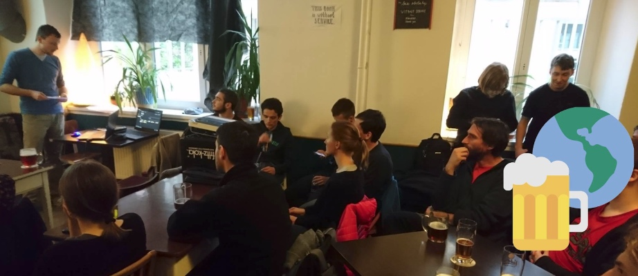
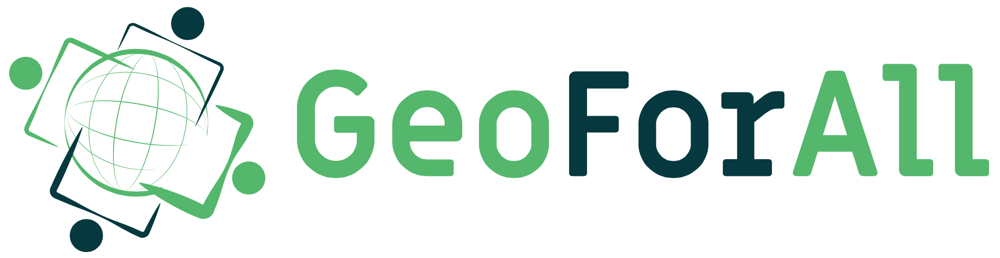
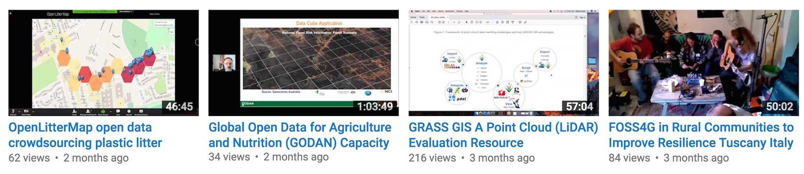

OSGeo
Open Source Geospatial Foundation
https://www.osgeo.org
Helena Mitasova, Vaclav Petras, Anna Petrasova
NCSU
GeoForAll Lab
at
Center for Geospatial Analytics
with contributions by OSGeo community


a 21st century organization
Free, Open, Self-organizing, Global
What is OSGeo
- OSGeo is a not-for-profit software foundation
providing organizational, legal, and financial support for projects
- OSGeo is volunteer driven
Passionate membership of individuals from around the world.
- OSGeo promotes adoption of open geospatial technology
Partnerships on open approach to software, standards, data and education.
OSGeo history
- Established in 2006 at a meeting in Chicago, IL with financial support from AutoDesk
- Driven by need to organize and navigate rapidly growing field of open source geospatial projects
- Founding members: leading open source geospatial projects - GDAL, Mapserver, QGIS, GRASS GIS, PostGIS

Supporting Open Source
Software development
OSGeo projects
Projects are the OSGeo core focus
25 graduated through a rigorous incubation:
- Web Mapping: deegree, Geomajas, GeoMoose, Geoserver, mapbender, mapfish, MapServer,
MapGuide Open Source*, OpenLayers, PyWPS
- Desktop: GRASS GIS, gvSIG Desktop, Marble, QGIS Desktop
- Libraries: GDAL/OGR, GEOS, GeoTools, OSSIM, Orfeo ToolBox
- Spatial Database, metadata catalogs, other: GeoNetwork, GeoNode, OSGeoLive, PostGIS, pycsw
OSGeo projects
15 Community projects, 6 are in incubation (*):
- Libraries: Proj6, pgRouting, Pronto Raster
- Web Mapping: istSOS*, ZOO-project*, Oskari*, GeoWebCache, GC2/Vidi
- Desktop: OSGeo4W, Optics*
- Other: MetaCRS*, Loader, GeohealthCheck, Portable GIS, TEAM Engine*

OSGeo projects governance
- Project graduation checklist
- Provenance documents for each graduated project
- Independently run by a Project Steering Committee
- Annual status reports to OSGeo board
- OSGeo manages contributor agreements
Code sprints
- OSGeo budget supports code and community sprints
- Collaborative sprints with multiple projects
- Community sprints associated with FOSS4G conferences
- Code sprints organzied by projects
Sign up for OSGeo community sprint 2019! May 14-17, Twin Cities, MN

Community sprint at FOSSGIS 2017
Google Summer of Code
https://summerofcode.withgoogle.com
- OSGeo serves as umbrella organization for projects
- Smaller open source geospatial projects can also join
- 12 years, 150+ students ($750,000 +)
- mentors work for free, get to visit Google headquarters


Google_Code-in
https://codein.withgoogle.com/archive/
- OSGeo serves as umbrella organization for project participation in Google code-in
- Fostering pre-university student participation in OSGeo
- 2 years, 649 small tasks for 11 OSGeo projects

Google Season of Docs-in
OSGeo Community
OSGeo membership
Open, free membership:
- 5600+ members registered on wiki,
- 30000+ OSGeo mailman server unique subscribers
- 390 elected charter members: developers, activists
- charter members elect the board of directors
Local chapters
- 30 + local chapters all over the world
- organize meetups, conferences, code sprints
- report at Annual General Meeting at Global FOSS4G
- manage translations of documentation
 

Beyond software
OSGeo works with partners to support and promote
- Open Source:collaborative software development.
- Open Data: free access to geospatial data
- Open Standards: avoid lock-in, use interoperable software
- Open Education: learning and teaching without barriers
- Open Science: Share data, software, publications
Conferences: Global
Annual global FOSS4G conference travels around the world
FOSS4G 2019: Bucharest, Romania
FOSS4G 2020: Calgary, Canada


Conferences: regional
Organized by local chapters, rapidly growing
15+ regional FOSS4G / OGRS conferences per year
Sessions at major conferences
- Participation at major scientific and technology conferences
- Open geospatial sessions, workshops, townhalls
- ISPRS, ICC, AGU, EGU, ...
- MoUs with several organizations


GeoForAll:
OSGeo educational initiative
Global network of academic research and education laboratories and government/industry partners

Mission and goals
Making geospatial education and opportunities accessible to all
- Create research and teaching opportunities in open geospatial science
- Build global open access teaching and research infrastructure
- Establish collaborations between academia, government and industry around open geospatial science and education
How it started
Founded in 2011: MoU between OSGeo and the International Cartographic Association (ICA)

Georg Gartner and Arnulf Christl, renewal in 2015 with Jeff McKenna
More MoUs
International Society for Photogrammetry and Remote Sensing (ISPRS) signed in 2014.
University Consortium for GIScience (UCGIS) signed in 2016
Association of Geographic Information Laboratories in Europe (AGILE) signed in 2017

Map of the labs 2012
12 labs in 2012
Map of the labs 2017
over 100 labs globaly in 2017

Education initiatives
- open access educational material based on free and open source geospatial software and data
- free and open source curricula, courses, and workshops
- OSGeo Educational Content Inventory
- Teaching areas for some labs are listed on wiki - add yours https://wiki.osgeo.org/wiki/ICA_OSGeo_Lab_Teaching_areas

Education initiatives
- teacher training and school education interest group: Elzbieta Woloszynska-Wisnievska, Adrian Manning
- UN initiative https://wiki.osgeo.org/wiki/UnitedNations_Committee
- open source GIS certificate U Colorado Denver
- GeoAcademy, open access on-line courses
fossgeo.org: 10000+ learners enrolled in 4 years
Research
- research projects developing methods, algorithms and tools
for open geospatial science and applications
- development and contributions to open geospatial software, data
- organizing and participating in community sprints


Webinars
- 8 webinars since summer 2016,
- selected webinars joint with UCGIS and ASPRS CaGIS
- Interested to present? Contact Rafael.Moreno@ucdenver.edu

http://www.geoforall.org/webinars/ YouTube channel
Publications
- Special topics, open access journal issues
- FOSS4G academic sessions proceedings,
new in 2017 - OSGeo Journal published through UMass library system http://scholarworks.umass.edu/foss4g/ - On-line publications
- Books


How to participate in GeoForAll
Three types of participation:
- members of the global network: academic labs
- partners from industry/government/nonprofit partner
- MoU for international professional organizations
Where to find member labs
Wiki http://wiki.osgeo.org/wiki/Edu_current_initiatives
- member table with links to labs
- education and research topics
- will be maintained to keep track of invited labs

Where to find member labs
New Website http://osgeo.org/geo-for-all-labs/

Where to find courses
New Website >> Resources
Submit yours through a new form

Geospatial FOSS at NCSU
https://geospatial.ncsu.edu/osgeorel- graduate course development using Geospatial FOSS
- research
- active participation in OSGeo projects
- Geospatial Studios
Course material
- Freely and openly available online
geospatial.ncsu.edu/osgeorel - Managed in GitHub for revision control and collaboration
- Format: HTML/HTML5, License: CC BY-SA
- registered in OSGeo Educational Content Inventory

reference to ijgi paper
Tangible Landscape
Tangible interface for GRASS GIS

Book: Petrasova, A., Harmon, B., Petras, V., Mitasova, H. Tangible Modeling with Open Source GIS, Springer International Publishing, 2015.
Questions?
New interactiveGeoForAll Labs map

Thank you Barend Köbben, ITC-University of Twente